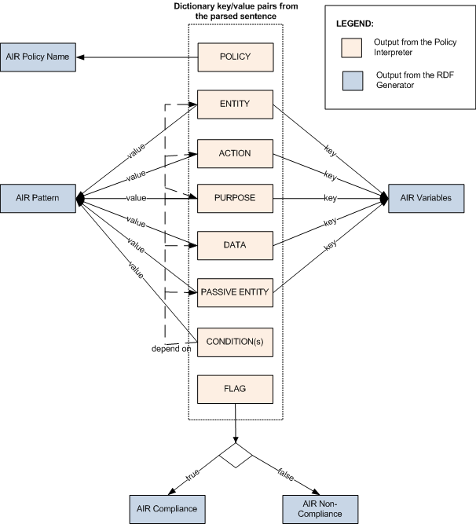

Implementation of the Policy Parser
As briefly described in the Intro section, the Policy Parser consists of three major components: the NLTK Parser, the Policy Interpreter, and the RDF Generator. The system also includes the online RDF policy store as well as the AIR reasoner, but these can be considered peripheral to the above three components. In this section, we will describe each of these components in detail. Before we dive into the detail, we first define the scope of our project with respect to the types of user input that the Policy Parser is capable of handling.
User Input: Automatically parsing any natural language sentence is an extremely challenging task, and is out of scope of this project. Thus, we focus on a set of constrained natural language sentences; more specfiically, our system is able to accept a sentence of the following form:
subject [mod] action object ['to' secondary_object] [purpose] [condition]*
where the meanings of the constituents are the following:
- subject: The main actor or entity who carries out an action (e.g. "A student")
- mod: An optional modality for an action (e.g. "can" or "cannot")
- action: The action performed by the subject (e.g "transfer")
- object: The object on which the action is performed (e.g. "a proximity card")
- secondary object: an optional object that modifies the action (e.g. "to another person")
- purpose: an optional purpose for which the action is performed (e.g. "for building access")
- condition: any optional condition on the action performed (e.g. "if the student is not authorized")
Each sentence corresponds to a single policy. The constituents between '[' and ']' are optional; therefore, an input sentence must consist of, at minimum, a subject, an action, and an object. Also, '*' means "one or more"; thus, a policy may consist of any number of conditions.
For example, the following sentence is a valid input policy to the Policy Parser:
Committee on Discipline may access prox card data for criminal investigation.
where:
- the subject is "Committee on Discipline";
- the modality is the auxiliary verb "may";
- the object is "prox card data";
- the purpose is "criminal investigation"; and
- the secondary object and the condition are none.
NTLK Parser: Given a user's input policy, the first step is to parse this sentence into a structured format that is manipulable by a computer. We use a feature-based context-free grammar (FCFG). Unlike an ordinary CFG, a FCFG embellishes its production rules with extra attributes to denote each tree node having a set of properties. For example, the above sentence "Committee on Discipline may access prox card data for criminal investigation" is parsed into the following syntax tree:
As shown in this tree, the left-hand side of the top-level production rule 'S' contains a feature for each of the constituents (e.g. for example, the feature "action" for the action constituent in the policy). The value assigned to each top-level feature is defined in terms of features from the subtrees. Note that the l.h.s. of each part-of-speech rule (e.g. 'NP' for noun-phrase) is augmented with the 'sem' feature; this allows us to assign a logical expression to each node in the tree. Here, we use the application of the lambda function 'cat' to concatenate one or more lexicons into a single constituent.
There are two benefits to this feauture-based approach over an ordinary CFG-based appraoch. First of all, by explicitly stating each constituent as a top-level feature, it makes the process of extracting semantic information from a policy a lot eaiser; the Policy Interpreter (the next component in the pipeline) simply needs to walk over the list of top-level features and map each to a corresponding RDF construct. Secondly, the feature-based approach simplifies the grammar itself. For example, two sentences may be textually different from each other but semantically, they may represent the same policy. A FCFG that parses both of these sentences is smaller than a corresponding ordinary CFG, since the semantic information captured in the features allow us to collapse multiple production rules in the CFG into a single rule in the FCFG.
We used an existing infrastructure in the Natural Language Toolkit (NLTK) [1] for this part of the Policy Parser. More specifcially, we adopted the data structure for FCFGs and the feature parser, both of which were available in a NLTK-based library [2], developed by Rob Speer. In addition to a user's sentence, the FCFG parser in NLTK requires three arguments; the FCFG grammar (stored as a .fcfg file), the spelling change rules (a Kimmo file), and the lexicon (.lex file). All of these files are available in the Download Code section.
Policy Interpreter: Given a syntax tree generated by the NLTK Parser, the role of the Policy Interpreter is to extract the semantic information about the user's policy - i.e. the value for each of the constituents in the policy. As mentioned above, this process is relatively straightforward, as it simply involves looking through the list of features that are stored in the root of the syntax tree. The only intricate step in this process is walking over a lambda-calculus expression that is a concatentation of multiple lexical tokens; this step is implemented using a recursive function for traversing an expression.
The output from the Policy Interpreter is a dictionary
(i.e. a list of key-value pairs) that maps each
constituent to its value. For example, given the syntax
tree for the sentence "Committee on Discipline may access
prox card data for criminal investigation", the Policy
Interpreter outputs the following dictionary:
{
'ENTITY':'Committee on Discipline'
'FLAG': True
'ACTION': 'use'
'PURPOSE': 'investigate crime'
'DATA': 'prox card data'
'CONDITION': [ ]
'SECONDARY_ENTITY': None
}
Note that some of the keys in the dictionary have
different names than the constituents, but there is a 1-1
correspondence between these two sets of names. The
renaming was done due to the fact that RDF uses a set of
pre-designated identifiers for its constructs.
The Policy Interpreter has been implemented in Python and can be found in the PolicyInterpreter directory of the downloadble code.
RDF Generator:
This module is responsible for creating the AIR (Accountability In RDF) policy. Once the sentence is fragmented into the relevant components as described above, it will identify the corresponding RDF segments and create the RDF graph using the RDFLib python library.
AIR is a rule based policy language written in RDF for accountability and access control. Each AIR policy consists of one or more rules:
policy = { rule }
Each rule is made up of a pattern that when matched causes an action to be fired. Optionally there could be description and justification
elements as well.
rule = { pattern, action [ description justification ]}
An action can either be an assertion (which is a set of facts that are added to the knowledge base) or a nested rule.
action = { assertion | rule }
The basic skeleton of an AIR policy is as follows:
:MyFirstPolicy a air:Policy;
air:rule [
air:variable { ... };
air:pattern { ... };
air:assertion { ... };
air:rule [ ... ]
].
In order to generate an Air policy from a constrained natural language sentence, at least two other parameters are required:
- Name for the policy
- One or more domain ontologies
The name of the policy is required because the user should be able to identify the policy, and it is not suitable to have a random machine generated policy name. The domain ontology/ontologies are required because some of the sentence fragments need to be identified with the corresponding subject / predicate / object in the RDF.
The following diagram shows how the dictionary keys and values from the Policy Interpreter is used in constructing the AIR policy.
The dictionary element "POLICY" is used to name the policy. If the key values of elements "ENTITY", "ACTION", "PURPOSE, "DATA" are "PASSIVE ENTITY"
are existing they are used to assign air:variables
Select Intro on the left-hand menu to find more about the project. If you feel adventurous, click Try It Now! to play with the online Policy Parser.
[1] Steve Bird and Edward Loper. NLTK: The Natural
Language Toolkit. Proceedings of the ACL demonstration
session. pp 214-217, Barcelona, Association for
Computational Lingusitics, July 2004.
[2] Rob Speer. The 6.863 Feature Parsing Library.
http://web.mit.edu/6.863/www/parser
[3] RDFLib http://rdflib.net/
[4] Lalana Kagal, Chris Hanson, Daniel Weitzner at al, Decentralized Information Group, CSAIL, MIT.
AIR Policy Language http://dig.csail.mit.edu/TAMI/2007/AIR/